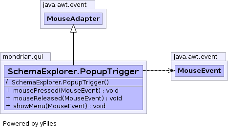

class SchemaExplorer.PopupTrigger extends MouseAdapter

| Constructor and Description |
|---|
SchemaExplorer.PopupTrigger() |
| Modifier and Type | Method and Description |
|---|---|
void |
mousePressed(MouseEvent e) |
void |
mouseReleased(MouseEvent e) |
void |
showMenu(MouseEvent e) |
mouseClicked, mouseDragged, mouseEntered, mouseExited, mouseMoved, mouseWheelMovedSchemaExplorer.PopupTrigger()
public void mousePressed(MouseEvent e)
mousePressed in interface MouseListenermousePressed in class MouseAdapterpublic void mouseReleased(MouseEvent e)
mouseReleased in interface MouseListenermouseReleased in class MouseAdapterpublic void showMenu(MouseEvent e)